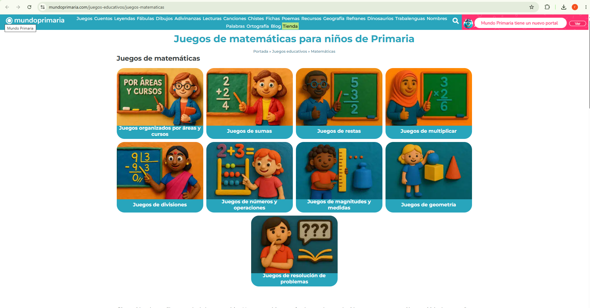
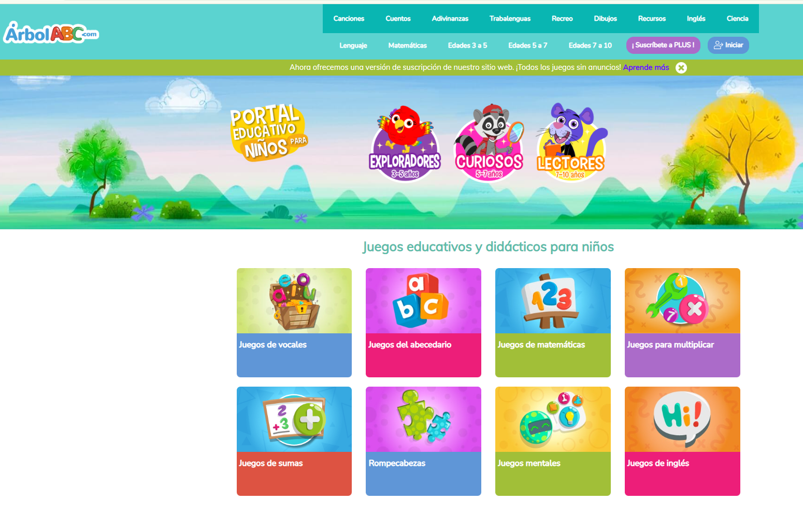
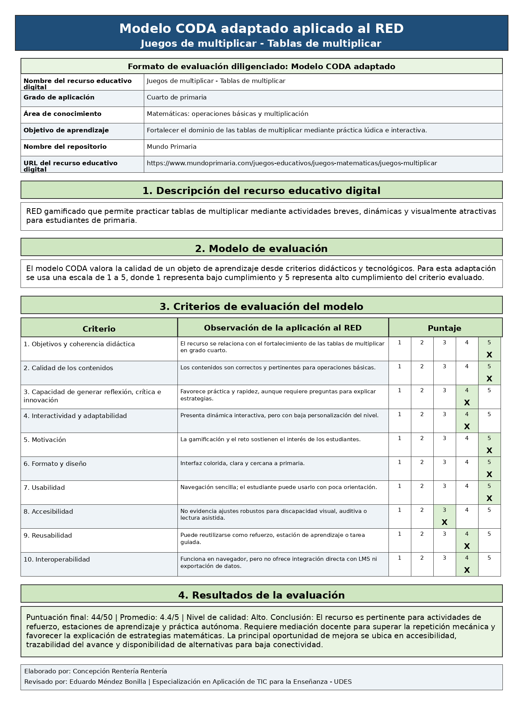
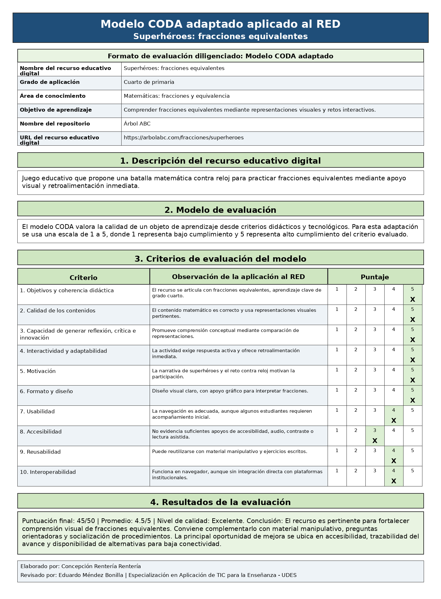

Universidad de Santander
VIGILADA MINEDUCACIÓN | SNIES 2632
MAGNA EDUCATIO AD MELIOR
Evaluación de Recursos Educativos Digitales
Portafolio digital - Matemáticas - Grado 4° de primaria
VIGILADA MINEDUCACIÓN | SNIES 2632
MAGNA EDUCATIO AD MELIOR
Portafolio digital - Matemáticas - Grado 4° de primaria
Estudiante: Concepción Renteria Renteria
Profesor Consultor: Eduardo Méndez Bonilla
Módulo: Evaluación de Recursos Educativos Digitales
Universidad de Santander (UDES)
Área de aplicación: Matemáticas | Grado: 4° de primaria
Este portafolio digital explora, analiza y aplica diferentes modelos de evaluación de calidad a Recursos Educativos Digitales (RED) para el área de Matemáticas en grado 4° de primaria. Se presentan seis modelos de evaluación, se seleccionan tres para su aplicación práctica, se evalúan dos recursos educativos digitales de matemáticas y se propone un modelo adaptado al contexto colombiano.
Descripción: Herramienta desarrollada por la Universidad Complutense de Madrid que combina criterios pedagógicos y tecnológicos.
Criterios: Objetivos y coherencia didáctica, calidad de los contenidos, capacidad de generar reflexión, interactividad y adaptabilidad, motivación, formato y diseño, usabilidad, accesibilidad, reusabilidad, interoperabilidad.
Métrica: Escala de 1 a 5. Metodología: Evaluación por pares o autoevaluación mediante formulario.
Descripción: Instrumento internacional para evaluación colaborativa de objetos de aprendizaje.
Criterios: Calidad del contenido, alineación con objetivos, retroalimentación, motivación, diseño, interacción, accesibilidad, reusabilidad, estándares.
Métrica: Escala de 1 a 5. Metodología: Revisión colaborativa por pares.
Descripción: Modelo práctico de revisión por pares desarrollado por California State University.
Criterios: Calidad del contenido, efectividad como herramienta de enseñanza, facilidad de uso.
Métrica: Escala de 1 a 5. Metodología: Evaluación por docentes usuarios.
Descripción: Estándar español de calidad para materiales educativos digitales (AENOR).
Criterios: Descripción didáctica, calidad de contenidos, navegación, accesibilidad, interactividad, portabilidad, robustez, operabilidad, etc.
Métrica: Indicadores cualitativos y cuantitativos.
Descripción: Herramienta española que combina juicio de experto con sonda automática.
Criterios: Contenido, objetivos, feedback, usabilidad, motivación, accesibilidad, requerimientos técnicos, propiedad intelectual, efectividad del aprendizaje.
Métrica: Checklist y escala valorativa.
Descripción: Modelo centrado en el enfoque pedagógico subyacente a los recursos digitales.
Criterios: Epistemología, filosofía pedagógica, rol del docente, control del estudiante, aprendizaje cooperativo, sensibilidad cultural, valor del error, motivación, etc.
Métrica: Continuo entre dos polos opuestos por cada dimensión.
| Modelo | Pros | Contras | Recomendación |
|---|---|---|---|
| CODA | Equilibrio pedagógico-tecnológico, completo | Puede ser extenso | Ideal para recursos centrales |
| LORI | Claro, fácil comparación | Depende del criterio del evaluador | Comparar varios RED similares |
| MERLOT | Sencillo, rápido, práctico | Superficial en accesibilidad | Primera criba y evaluación con estudiantes |
Modelo más pertinente para adaptar: CODA, incluyendo criterio de conectividad y pertinencia curricular para matemáticas de 4°.
📌 Contenido del video: Presentación de los modelos CODA, LORI y MERLOT · Análisis de pros y contras · Resultados de la evaluación aplicada a los RED de Matemáticas · Propuesta del modelo CODA adaptado al contexto colombiano

Imagen del recurso educativo "Juegos de multiplicar" - Mundo Primaria
| Campo | Información |
|---|---|
| Nombre del RED | Juegos de multiplicar - Tablas de multiplicar |
| Área de conocimiento | Matemáticas - Operaciones básicas (multiplicación) |
| Nivel o grado | Básica primaria - Grado 4° (8-10 años) |
| Autor | Mundo Primaria |
| Plataforma | Mundo Primaria |
| Enlace al RED | https://www.mundoprimaria.com/juegos-matematicas |
| Descripción | Portal con múltiples juegos de matemáticas organizados por áreas: sumas, restas, multiplicaciones, divisiones, geometría y resolución de problemas. Ideal para que los niños de 4° practiquen las tablas de multiplicar de forma lúdica. |
| Características | Interfaz colorida, gamificada, retroalimentación inmediata, progresión por niveles, gratis sin registro. |
| Limitaciones | Requiere conexión a Internet. Contiene publicidad. No tiene adaptación para discapacidad visual. |
| Estándares | Usabilidad alta, motivación alta. Alineado con pensamiento numérico del MEN para grado 4°. |

Imagen del recurso educativo "Fracciones equivalentes" - Árbol ABC
| Campo | Información |
|---|---|
| Nombre del RED | Fracciones equivalentes |
| Área de conocimiento | Matemáticas - Fracciones y proporcionalidad |
| Nivel o grado | Básica primaria - Grado 4° (8-10 años) |
| Autor | Árbol ABC |
| Plataforma | Árbol ABC |
| Enlace al RED | https://arbolabc.com/juegos-de-fracciones |
| Descripción | Portal educativo con juegos de fracciones que utilizan representaciones visuales (círculos, rectángulos, pizzas) para explicar fracciones equivalentes. Los estudiantes emparejan fracciones que representan la misma cantidad. |
| Características | Enfoque visual y concreto, ideal para comprensión inicial, ejercicios progresivos, feedback inmediato. |
| Limitaciones | Requiere conexión a Internet. Algunas actividades pueden ser repetitivas. |
| Estándares | Buena usabilidad, excelente representación visual. Alineado con pensamiento métrico del MEN. |
Evaluación Contextual de Recursos Educativos Digitales para básica primaria
Un modelo práctico para evaluar recursos digitales en Matemáticas de grado 4°
En muchas escuelas, la conexión falla o es muy lenta. Un buen recurso debe poder usarse también sin internet.
Hay niños que necesitan ver, otros escuchar, otros tocar. El modelo debe considerar la diversidad.
Un recurso puede ser divertido, pero ¿realmente ayuda a aprender Matemáticas?
El modelo debe ayudar al docente a decidir qué recurso usar y cómo acompañarlo.
Nos enseñó a mirar pedagogía + tecnología juntos. Muy completo pero un poco extenso.
Nos enseñó a comparar recursos fácilmente. Ideal para elegir entre varias opciones.
Nos enseñó a evaluar rápido: contenido, efectividad y facilidad de uso.
Es un modelo práctico y adaptado para evaluar recursos digitales de Matemáticas en grado 4°.
¿Enseña bien?
¿Funciona bien?
¿Entienden los niños?
¿Se adapta al contexto?
¿El recurso enseña lo que el niño debe aprender en 4°?
¿La información matemática es precisa y suficiente?
¿El niño piensa, resuelve y construye conocimiento?
¿Le dice al niño por qué se equivocó y cómo mejorar?
¿El recurso es divertido y mantiene el interés del niño?
¿Las instrucciones y mensajes son fáciles de entender?
¿El niño puede usarlo sin ayuda del docente?
¿Pueden usarlo niños con diferentes necesidades?
¿Se puede usar con guías impresas o actividades sin pantalla?
¿Tiene publicidad inapropiada o riesgos para los niños?
90-100
80-89
70-79
60-69
-60
Nivel Alto ✅
👍 Excelente para practicar tablas de multiplicar. Muy motivador y fácil de usar.
⚠️ Falta accesibilidad para niños con discapacidad visual.
Nivel Alto ✅
👍 Excelente para entender fracciones equivalentes con dibujos y visuales.
⚠️ Necesita complementarse con actividades manipulativas (pizzas de cartulina).
¿Por qué?
¿Qué recurso voy a evaluar? ¿Para qué tema de Matemáticas?
Aplico los 12 criterios, asigno puntaje de 1 a 5 y calculo el total.
¿Lo uso tal cual? ¿Lo adapto? ¿Lo complemento con actividades?
Con el propósito de valorar la calidad pedagógica y técnica de los Recursos Educativos Digitales seleccionados, se aplicaron tres modelos de evaluación: CODA, LORI y MERLOT. Los recursos analizados fueron "Juegos de multiplicar - Tablas de multiplicar", de Mundo Primaria, y "Fracciones equivalentes", de Árbol ABC, ambos dirigidos al fortalecimiento del aprendizaje de las Matemáticas en estudiantes de grado cuarto de primaria.
La aplicación de estos modelos permitió identificar fortalezas, limitaciones y posibilidades de uso pedagógico de cada RED, además de establecer cuál de los modelos resulta más pertinente para ser adaptado al contexto educativo propio.
Con el propósito de valorar la calidad pedagógica y técnica de los Recursos Educativos Digitales seleccionados, se aplicaron tres modelos de evaluación: CODA, LORI y ECODA. Los recursos analizados fueron "Juegos de multiplicar - Tablas de multiplicar", de Mundo Primaria, y "Superhéroes: fracciones equivalentes", de Árbol ABC, ambos dirigidos al fortalecimiento del aprendizaje de las Matemáticas en estudiantes de grado cuarto de primaria.
La aplicación de estos modelos permitió identificar fortalezas, limitaciones y posibilidades de uso pedagógico de cada RED, además de establecer cuál de los modelos resulta más pertinente para ser adaptado al contexto educativo propio.

Formato de evaluación diligenciado: Modelo CODA adaptado
Resultado: 44/50 · Promedio: 4.4/5 · Nivel: Alto ✅
El recurso es pertinente para actividades de refuerzo, estaciones de aprendizaje y práctica autónoma. Requiere mediación docente para superar la repetición mecánica y favorecer la explicación de estrategias matemáticas.

Formato de evaluación diligenciado: Modelo CODA adaptado
Resultado: 45/50 · Promedio: 4.5/5 · Nivel: Excelente 🌟
El recurso es pertinente para fortalecer comprensión visual de fracciones equivalentes. Conviene complementarlo con material manipulativo, preguntas orientadoras y socialización de procedimientos.
Formato de evaluación diligenciado: Modelo LORI adaptado
Resultado: 40/45 · Promedio: 4.44/5 · Nivel: Alto ✅
El recurso es pertinente para actividades de refuerzo, estaciones de aprendizaje y práctica autónoma. La principal oportunidad de mejora se ubica en accesibilidad y trazabilidad del avance.

Formato de evaluación diligenciado: Modelo ECOBA adaptado
Resultados por dimensión:

Formato de evaluación diligenciado: Modelo ECOBA adaptado
Resultados por dimensión:
| Modelo | Mundo Primaria | Árbol ABC |
|---|---|---|
| CODA | 44/50 (Alto) | 45/50 (Excelente) |
| LORI | 40/45 (Alto) | — |
| ECODA | 93/111 | 100/111 |
Conclusión general: Ambos recursos son pertinentes para el aprendizaje de Matemáticas en grado cuarto. Mundo Primaria es ideal para la práctica lúdica de tablas de multiplicar, mientras que Árbol ABC sobresale en la comprensión visual de fracciones equivalentes. La principal oportunidad de mejora en ambos casos es la accesibilidad y la posibilidad de uso en contextos de baja conectividad.